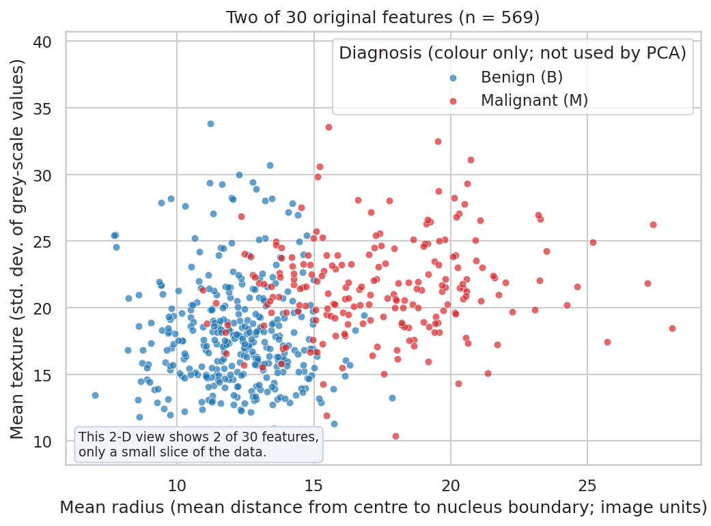
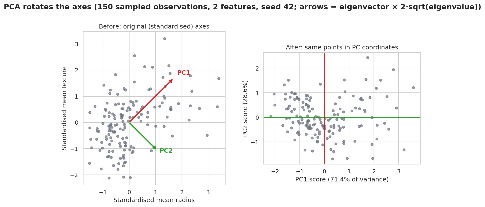
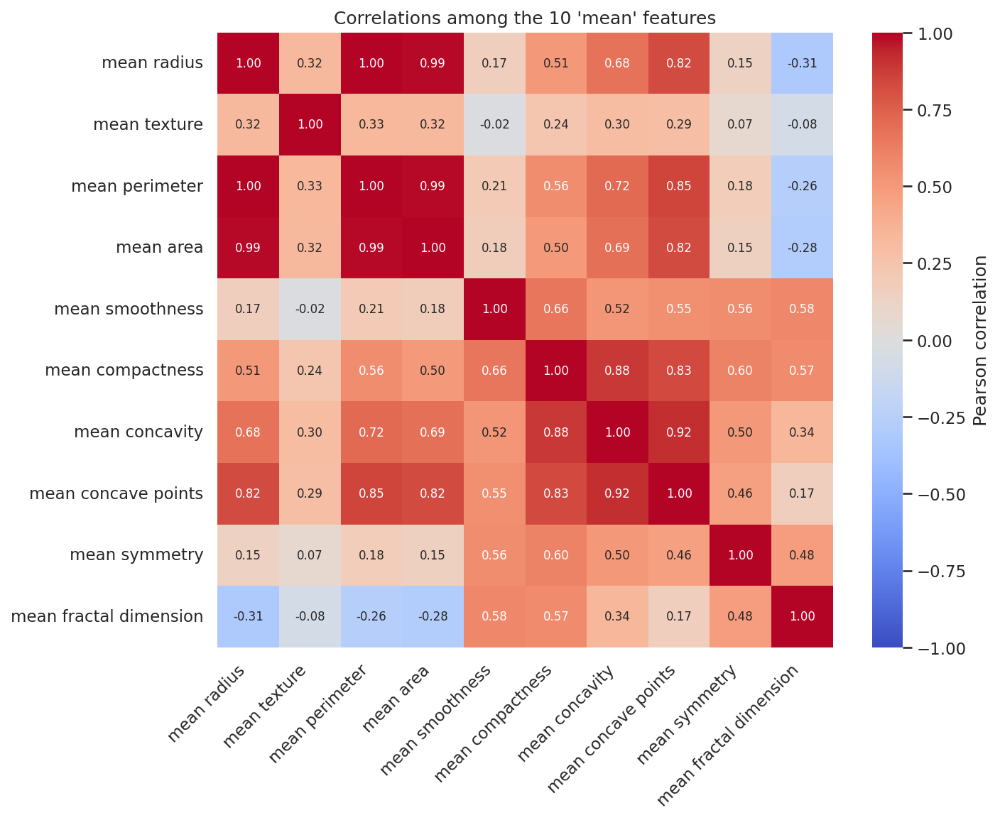
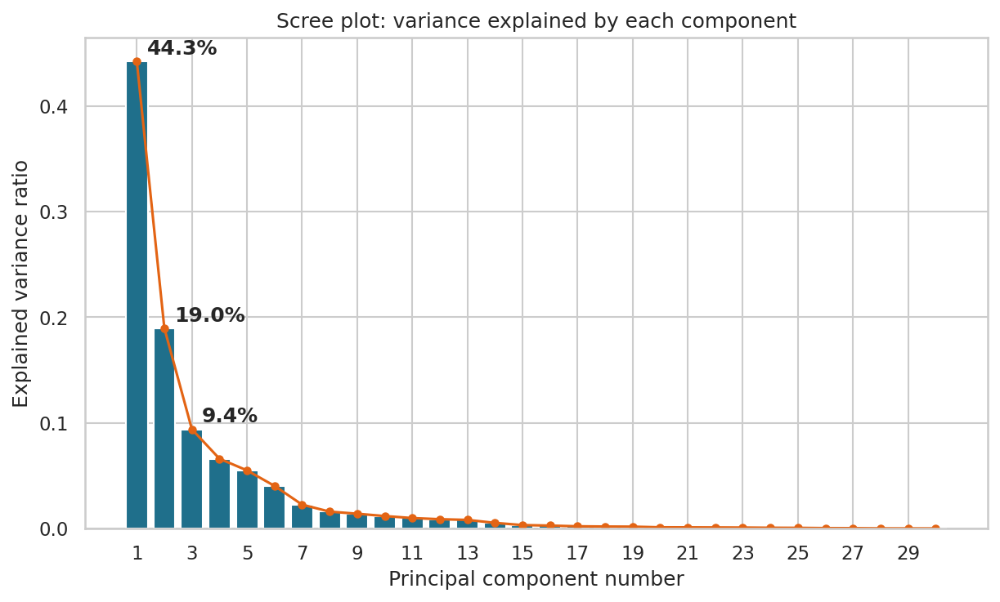
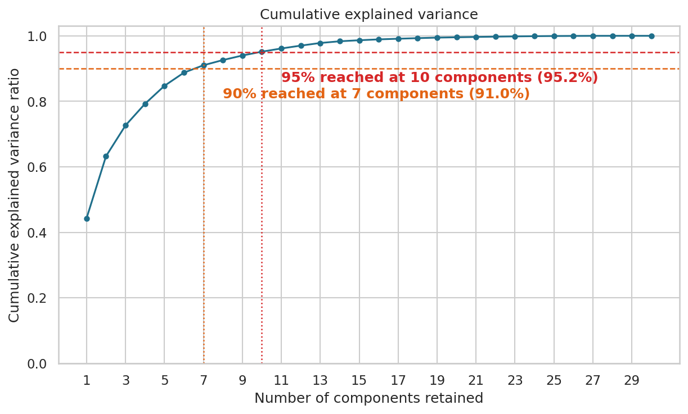
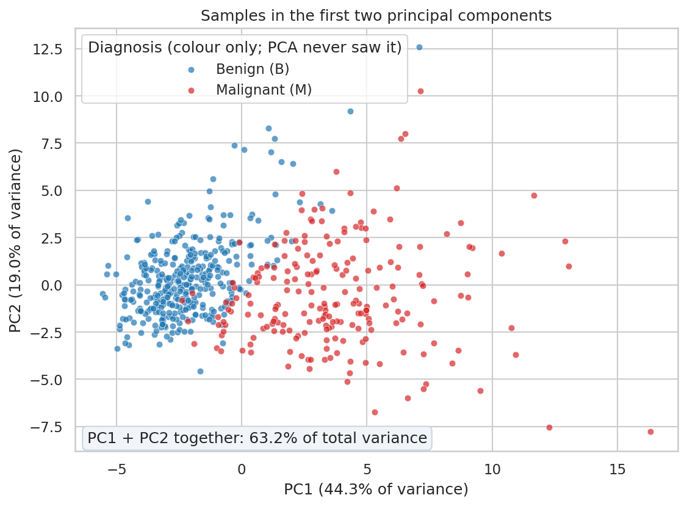
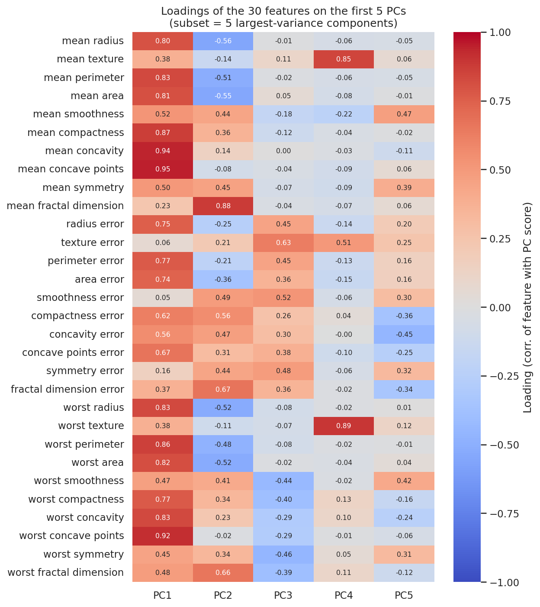
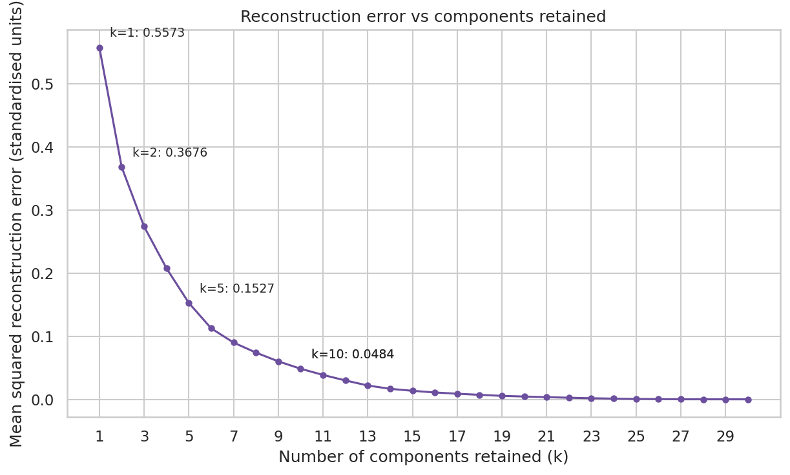

1. Introduction to PCA
Dimensionality is the number of features measured per observation. This dataset has 30. Dimensionality reduction re-expresses data with fewer variables while keeping as much useful structure as possible. High dimensions are hard to visualise, often contain redundant features, and can make models noisier.
Think of measuring a coin's radius, perimeter and area: three numbers, but really one size. Principal Component Analysis finds such shared directions and builds new, uncorrelated variables, principal components, ordered by how much variance they carry.
Definition
PCA is an unsupervised linear method that finds orthogonal directions of maximum variance in (centred, usually standardised) data and expresses the data in those directions.
- Feature selection vs extraction: selection keeps some original columns; PCA (extraction) creates new combinations of all of them.
- PCA vs K-Means: PCA re-describes features; K-Means groups observations. They answer different questions.
- Uses: visualisation, compression, redundancy reduction, preprocessing, exploration.
- Limits: linear only, scale and outlier sensitive, components hard to interpret, variance is not the same as relevance.
Dataset used throughout
Breast Cancer Wisconsin (Diagnostic) from the UCI repository: 569 samples (357 benign, 212 malignant), 30 numeric measurements (10 properties of cell nuclei, each as mean, standard error and worst value), no missing values. Download Dataset (CSV)
Not a diagnostic tool
PCA here is an educational analysis. Nothing on this page is medical advice, and a 2-D plot does not establish clinical separability.
The unlabelled-data rule
PCA never sees the diagnosis label. Colours in some graphs are added afterwards, for comparison only.

What Are You Looking At?
Each dot is one tissue sample, placed by two of the 30 measurements. Colour shows the recorded diagnosis for comparison only.
How Was It Calculated?
Raw values from the CSV; no transformation. Diagnosis is not used by PCA.
How Should You Read It?
x = mean radius, y = mean texture. Blue = benign, red = malignant.
Key Takeaways
- Larger mean radius is associated here with malignant samples, but the colours overlap.
- Two features are a small slice of 30 dimensions.
Important Limitation
A 2-D scatter of raw features is not a diagnostic test and does not show what the other 28 features contain.
2. The intuition behind PCA
When two features are correlated they rise and fall together, so one adds little beyond the other. Picture a cloud of points stretched along a diagonal. The direction of greatest spread is the first principal component: among all linear directions it keeps the most variance when you project onto it. The second captures the most remaining variance while being perpendicular (orthogonal) to the first, and so on.
A score is an observation's coordinate along a component. Each component is a weighted combination of original features, so PCA is not "picking the most important columns": PC1 is a new variable mixing many columns.

What Are You Looking At?
A 2-feature illustration of how PCA rotates the axes.
How Was It Calculated?
150 randomly sampled observations (seed 42), mean radius and mean texture, standardised; PCA fitted on those two columns. Scores satisfy Z = XcV (checked in the script).
How Should You Read It?
Left: standardised data with red PC1 and green PC2 arrows (eigenvector scaled by 2·sqrt(eigenvalue)). Right: the same points with axes rotated onto PC1 and PC2. PC1 carries 71.4% and PC2 28.6% of this 2-feature variance.
Key Takeaways
- PC1 points along the direction of greatest spread.
- PC1 and PC2 are perpendicular, and no information is lost in a full rotation.
Important Limitation
This is a two-feature subset, so these percentages do not describe the full 30-feature PCA.
3. Mathematics behind PCA
Let \(X\) be an \(n\times p\) data matrix (n observations, p features), with entries \(x_{ij}\).
\(\mu_j\) is the mean of feature j; \(X_c\) the mean-centred matrix; \(C\) the \(p\times p\) sample covariance matrix; \(v_j\) a unit eigenvector (component direction) with eigenvalue \(\lambda_j\) (variance along it); \(V_k\) the \(p\times k\) matrix of the first k eigenvectors; \(Z\) the \(n\times k\) score matrix; \(r_j\) the explained variance ratio; \(R_k\) the cumulative ratio. For standardised PCA, replace \(X_c\) by the standardised matrix \(X_s=(X-\mu)/\sigma\).
Eigenvectors give directions because \(C\) only stretches them (it does not rotate them); eigenvalues say how much variance lies along each.
Toy example (4 made-up points; not the cancer data)
Points: (1,2), (3,3), (5,6), (7,5).
Step 1, means: μ = (4, 4).
Step 2, centred: (-3, -2); (-1, -1); (1, 2); (3, 1).
Step 3, sums: Σx² and Σy² = 20, 10, Σxy = 12; divide by n − 1 = 3 to get C = [[6.667, 4.000], [4.000, 3.333]].
Step 4, eigenvalues (from \(\det(C-\lambda I)=0\)): 9.333 and 0.667. PC1 explains 93.3%.
Step 5, PC1 direction: v₁ = (0.832, 0.555) (the opposite sign is equally valid).
Step 6, scores Z = Xcv₁: -3.61, -1.39, 1.94, 3.05.
Advanced: why the top eigenvector maximises variance
The variance of data projected on a unit vector \(u\) is \(u^\top Cu\). Maximising it subject to \(u^\top u=1\) with a Lagrange multiplier gives \(Cu=\lambda u\), and the value reached is \(\lambda\). The largest eigenvalue therefore gives the maximum.
4. Covariance and correlation
Positive covariance: features rise together. Negative: one rises as the other falls. Near zero: no linear relationship. Pearson correlation rescales covariance: \(r_{xy}=\frac{\operatorname{cov}(x,y)}{s_xs_y}\), which equals the covariance of standardised variables. In the toy example r = 0.849.
Covariance depends on units (change metres to millimetres and it grows), so PCA on the covariance matrix favours large-unit features. PCA on standardised features equals PCA on the sample correlation matrix under standard conventions. Correlated features carry overlapping information, but correlation does not imply causation.
In the real data, mean radius correlates 0.998 with mean perimeter and 0.987 with mean area, but only 0.324 with mean texture.

What Are You Looking At?
How strongly the ten 'mean' features move together.
How Was It Calculated?
Pearson correlations computed on the ten 'mean' measurement columns of all samples.
How Should You Read It?
Red = positive correlation, blue = negative, white = near zero. Mean radius vs mean perimeter: 0.998; vs mean area: 0.987; vs mean texture: 0.32.
Key Takeaways
- 4 of 100 feature pairs have |r| above 0.9: heavy redundancy.
- The most negative pair is mean radius and mean fractal dimension (-0.31), which is weak.
Important Limitation
High correlation motivates PCA but does not prove a feature is safe to drop; it could matter for a specific task.
5. Eigenvalues and eigenvectors
Geometrically, an eigenvector is a direction that the matrix only stretches. In PCA the eigenvalue is the variance along that direction. For the toy matrix \(C\) above the eigenvalues are 9.333 and 0.667, so the first direction holds 93.3% of the total.
Because \(C\) is symmetric, its eigenvectors are orthogonal, which is why components are uncorrelated and perpendicular. Components are ordered by decreasing eigenvalue. If \(v\) is an eigenvector, so is \(-v\): flipping a component's sign changes nothing about the solution, and no orientation is "correct".
6. Standardization and preprocessing
PCA maximises variance, so feature scale matters. Mean-centering only shifts data; standardisation (StandardScaler) also divides by the standard deviation. Handle missing values first (none here), consider outliers (they inflate variance), and exclude identifiers and target labels. Whether to scale depends on the application.
Actual comparison on this dataset
Raw feature variances range from 7.0e-06 to 324,167. Unscaled PCA gives PC1 = 98.2% of variance, driven mainly by worst area. Standardised PCA gives PC1 = 44.3% spread across many features. Unscaled PCA is not "wrong", but it is dominated by large-variance features.
Leakage: for a predictive workflow, split first and fit the scaler and PCA on training data only, then apply them to validation/test data. A scikit-learn Pipeline does this automatically.
7. Explained variance and selecting components
The scree plot shows \(r_j\); the cumulative curve shows \(R_k\). Choose k by an elbow heuristic, a threshold (90%, 95%), or by validated downstream performance. More components keep more information but reduce simplification; the best k depends on the task, and high explained variance does not guarantee good prediction.

What Are You Looking At?
How much of the total variance each principal component carries.
How Was It Calculated?
Standardise all 30 features, fit scikit-learn PCA, plot explained_variance_ratio_.
How Should You Read It?
Bars = ratio per component. PC1 44.3%, PC2 19.0%, PC3 9.4%.
Key Takeaways
- PC1 alone carries 44.3% of the variance.
- Variance falls quickly: component 10 holds only 1.2%.
Important Limitation
Any 'elbow' is a visual judgement; there is no single correct cut-off.

What Are You Looking At?
How much variance the first k components keep together.
How Was It Calculated?
Cumulative sum of the explained variance ratios from the standardised 30-feature PCA.
How Should You Read It?
Dashed lines mark 90% and 95%. They are reached at 7 and 10 components; 99% needs 17.
Key Takeaways
- 7 of 30 components keep 90% of the variance.
- 10 components keep 95.2%.
Important Limitation
Variance thresholds are heuristics. The right k depends on the task, and retained variance does not guarantee predictive performance.
8. PCA projection and dimensionality reduction
Projecting to k dimensions is a matrix product: \(Z=X_cV_k\) with shapes \((n\times p)(p\times k)=(n\times k)\). Here, \(569\times30\) times \(30\times2\) gives a \(569\times2\) score matrix. A small example: toy point (1,2) centred is (−3, −2); times v₁ = (0.832, 0.555) gives its PC1 score.
The new features are uncorrelated mixtures, not original measurements. Information along dropped components is lost. This helps visualisation and redundancy reduction, but PCA features are not automatically better for every model. With PC1 and PC2 we keep 63.2% of the variance.

What Are You Looking At?
All samples projected onto the first two components.
How Was It Calculated?
PCA on standardised features without labels. Diagnosis only colours the points. PC1 + PC2 retain 63.2%.
How Should You Read It?
x = PC1 score, y = PC2 score. Axis labels give each component's variance share.
Key Takeaways
- The two components retain 63.2% of total variance.
- Mean PC1 score is -2.21 for benign and 3.71 for malignant, so the classes tend to sit at different PC1 values, with overlap.
Important Limitation
PCA did not use diagnosis. A visible split in 2-D is not proof of clinical separability, and this is not a diagnostic tool.
9. Principal component loadings and interpretation
Under the scikit-learn convention, components_ holds the eigenvectors (rows), and loadings are commonly defined as eigenvector × √eigenvalue. For standardised data a loading is the correlation between a feature and the component score. Large absolute loadings show which features move with a component. Signs are arbitrary, magnitudes depend on scaling, and with many correlated features it is hard to give a component a clean meaning. Names are only justified when the pattern supports them.

What Are You Looking At?
Which original features contribute to each component.
How Was It Calculated?
Loadings = eigenvector × sqrt(eigenvalue) from the standardised PCA. Shown: first 5 components (largest variance) and all 30 features.
How Should You Read It?
Colour and numbers show loadings from −1 to 1. For PC1 the largest are mean concave points (0.95), mean concavity (0.94), worst concave points (0.92); 30 of 30 features have the same sign on PC1.
Key Takeaways
- PC1 is broadly positive across features, a mix of size and shape measures.
- Signs can be flipped without changing the solution.
Important Limitation
Loadings are descriptive, depend on scaling, and are not causal effects. Component names should not be invented.
10. PCA vs other dimensionality reduction methods
| Method | Type | Objective | Interpretability | Best for |
|---|---|---|---|---|
| PCA | Linear, unsupervised | Maximise retained linear variance | Moderate (loadings) | Fast preprocessing, exploration |
| Feature selection | Subset of columns | Keep useful original features | High | When original meaning matters |
| LDA | Linear, supervised | Directions that separate classes (under its assumptions) | Moderate | Classification with labels |
| t-SNE | Nonlinear | Preserve local neighbourhoods | Low; distances between far clusters unreliable | 2-D visualisation only |
| UMAP | Nonlinear | Preserve neighbourhood graph structure | Low | Visualisation, some preprocessing |
| Autoencoders | Nonlinear, neural | Minimise reconstruction error | Low | Large, complex data; needs tuning |
No method is universally best: the choice depends on whether you have labels, need interpretability, expect nonlinearity, and your compute budget.
11. Python implementation
Download Dataset (CSV) Pandas loads and inspects, StandardScaler standardises, PCA fits. Everything below is computed, nothing hard-coded. The full graph script is generate_graphs.py.
import numpy as np, pandas as pd, seaborn as sns, matplotlib.pyplot as plt
from sklearn.preprocessing import StandardScaler
from sklearn.decomposition import PCA
from sklearn.model_selection import train_test_split
from sklearn.pipeline import make_pipeline
from sklearn.linear_model import LogisticRegression
df = pd.read_csv("data/breast_cancer_wisconsin.csv") # 1. load
print(df.shape, df.dtypes.unique(), df.isna().sum().sum()) # 2. inspect
y = df["diagnosis"] # 3. label kept separate
X = df.drop(columns=["diagnosis"]) # (also drop "id" if present)
X = X.fillna(X.median()) # 4. no-op here: 0 missing
Xs = StandardScaler().fit_transform(X) # 5. standardise
pca = PCA().fit(Xs) # 6. fit PCA
evr, cum = pca.explained_variance_ratio_, pca.explained_variance_ratio_.cumsum()
print(pca.explained_variance_[:3], evr[:3]) # 7. eigenvalues and ratios
plt.plot(range(1, len(evr) + 1), cum, marker="o"); plt.show() # 8. cumulative plot
Z2 = PCA(n_components=2).fit_transform(Xs) # 9. scores on PC1, PC2
sns.scatterplot(x=Z2[:, 0], y=Z2[:, 1], hue=y); plt.show() # 10. colour only, not used in fit
loadings = pd.DataFrame(pca.components_.T * np.sqrt(pca.explained_variance_),
index=X.columns, columns=[f"PC{i+1}" for i in range(Xs.shape[1])]) # 11
p5 = PCA(n_components=5).fit(Xs)
Xhat = p5.inverse_transform(p5.transform(Xs)) # 12. reconstruct
print(np.mean((Xs - Xhat) ** 2)) # 13. reconstruction MSE
print(PCA().fit(X).explained_variance_ratio_[0], evr[0]) # 14. unscaled vs scaled PC1
# Leakage-safe predictive workflow: preprocessing is fitted on training data only
Xtr, Xte, ytr, yte = train_test_split(X, y, test_size=0.25, stratify=y, random_state=42)
pipe = make_pipeline(StandardScaler(), PCA(n_components=0.95), LogisticRegression(max_iter=5000))
print(pipe.fit(Xtr, ytr).score(Xte, yte))explained_variance_ are the eigenvalues; explained_variance_ratio_ are the \(r_j\); fit_transform returns scores; inverse_transform reconstructs. In the pipeline, PCA(n_components=0.95) keeps enough components for 95% variance on the training set.
12. Evaluating PCA results
- Explained variance: first three components: 44.3%, 19.0%, 9.4%; 90% at 7 components, 95% at 10, 99% at 17.
- Reconstruction error (MSE, standardised units): k = 1: 0.5573, k = 2: 0.3676, k = 5: 0.1527, k = 10: 0.0484.
- Loadings and 2-D plots are visual, descriptive checks.

What Are You Looking At?
How well the original standardised data can be rebuilt from k components.
How Was It Calculated?
For each k, fit PCA, reconstruct with inverse_transform, and compute mean squared error over all entries of the standardised matrix.
How Should You Read It?
Error at k = 1: 0.5573, k = 2: 0.3676, k = 5: 0.1527, k = 10: 0.0484, k = 10: 0.0484.
Key Takeaways
- Error decreases as components are added and reaches ~0 at k = 30.
- Most reduction comes from the first few components.
Important Limitation
Good reconstruction is not the same as good prediction; a component that matters for a task may carry little variance.
Supervised check (diagnosis used here, with leakage-safe pipelines)
| Model (75/25 stratified split, seed 42) | Test accuracy | Test ROC AUC |
|---|---|---|
| Standardise + logistic regression (30 features) | 96.5% | 0.996 |
| Standardise + PCA (10 comps, 95%) + logistic regression | 97.2% | 0.997 |
| Standardise + PCA (2 comps) + logistic regression | 93.7% | 0.997 |
On this single split the differences are small and may be within noise (143 test samples). PCA is not guaranteed to improve performance, and this is an educational comparison, not clinical validation.
13. Common PCA mistakes
| Mistake | Practical correction |
|---|---|
| Not standardising when scales differ (unscaled PC1 = 98.2%) | Use StandardScaler, or justify why not |
| Including an ID column or target label in the input | Drop them before fitting |
| Fitting scaler/PCA on all data before a split | Use a Pipeline fitted on training data |
| Confusing scores with loadings | Scores describe observations; loadings describe features |
| Reading eigenvalues as percentages | Divide by their sum to get \(r_j\) |
| Treating PC1 as an original feature, or sign as meaningful | PC1 is a mixture; flip signs freely |
| Picking k only to hit a threshold | Validate on the task |
| Assuming high variance means predictive usefulness | Evaluate downstream |
| Treating a 2-D plot as proof of separability | Use proper supervised evaluation |
| Ignoring outliers or missing values | Inspect and treat before PCA |
| Reading components as causes | They are descriptive summaries |
14. Real-world applications of PCA
| Use | Benefit | Limitation / when not appropriate |
|---|---|---|
| Visualisation | 2-D/3-D views of high-dimensional data | Hides variance beyond shown components |
| Image compression | Keep top components | Lossy; modern codecs often do better |
| Genomics exploration | Reveals batch and population structure | Linear; needs careful scaling |
| Feature reduction before ML | Fewer, uncorrelated inputs | May discard label-relevant low variance |
| Exploratory analysis | Finds dominant patterns quickly | Components may be uninterpretable |
| Noise reduction | Drop low-variance components if noise lives there | Fails if signal is also low variance |
| Anomaly detection | Large reconstruction error flags unusual points | Outliers distort the PCA itself |
| Reducing redundancy | Merges correlated measurements | Loses original feature meaning |
PCA is not a substitute for domain expertise or task-specific validation.
15. Interview questions and revision notes
What is PCA?
An unsupervised linear technique that rotates mean-centred (usually standardised) data onto orthogonal directions, the principal components, ordered by how much variance they capture.
Why use PCA?
To visualise high-dimensional data, reduce redundancy among correlated features, compress data, and sometimes speed up or stabilise downstream models. It is not guaranteed to improve prediction.
What are principal components?
New variables that are linear combinations of the original features. Component j has weights given by eigenvector \(v_j\), and the scores are the data projected onto it.
Role of eigenvalues and eigenvectors?
Eigenvectors of the covariance matrix give the component directions; the matching eigenvalues give the variance along each direction.
What is the covariance matrix?
A p × p symmetric matrix whose entries are covariances between feature pairs; diagonal entries are variances. \(C=\tfrac1{n-1}X_c^\top X_c\).
Why standardise?
PCA maximises variance, so features with large numeric variance dominate. Here the largest raw feature variance is 324,167 and the smallest 7.0e-06; unscaled PC1 captures 98.2% mostly from one feature.
Explained variance ratio?
\(r_j=\lambda_j/\sum_\ell\lambda_\ell\): the share of total variance carried by component j.
Cumulative explained variance?
\(R_k=\sum_{j\le k}r_j\), the share kept by the first k components. On this data 7 components reach 90% and 10 reach 95%.
What are loadings?
In scikit-learn terms, eigenvectors scaled by the square root of the eigenvalues, \(v_j\sqrt{\lambda_j}\). For standardised data they are the correlations between features and component scores. Scikit-learn's components_ holds the unscaled eigenvectors.
PCA vs feature selection?
Selection keeps a subset of original columns; PCA builds new combinations of all columns, which are harder to interpret.
PCA vs LDA?
PCA is unsupervised and maximises variance; LDA uses class labels to find directions that separate classes under its assumptions.
What is reconstruction error?
The mean squared difference between data and its reconstruction \(\hat X=ZV_k^\top\) from k components. It falls as k grows and is zero at k = p.
What is data leakage in PCA?
Fitting the scaler or PCA on all data before a train/test split lets test information shape the transformation. Fit on training data only, ideally inside a pipeline.
Limitations of PCA?
Linear only, sensitive to scaling and outliers, components can be hard to interpret, and maximum variance need not mean maximum usefulness for a task.
Summary
Centre and (usually) standardise, compute the covariance matrix, take its eigenvectors as directions and eigenvalues as variances, project to the top k, then check explained variance, reconstruction error and downstream validity. Here 10 of 30 components keep 95% of the variance.
Formula revision sheet
PCA workflow checklist
- Drop identifiers and labels; check missing values and outliers.
- Split first if the goal is prediction.
- Standardise (fit on training data).
- Fit PCA; inspect scree, cumulative variance, loadings.
- Choose k with a justified rule and validate downstream.
- Report limitations; avoid causal or clinical claims.
PCA graph gallery
Eight graphs generated by generate_graphs.py. Select one to jump to it.